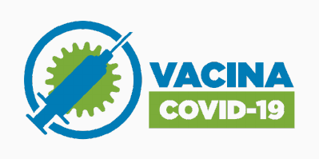

CADASTRO MUNICIPAL DE VACINAÇÃO

FIQUE POR DENTRO
Imunização: O cadastro e agendamento da vacinação estão disponíveis neste portal.
Pessoas que se encontram acamadas ou hospitalizadas por mais de 30 dias sem previsão de alta, devem fazer menção no momento do cadastro e aguardar o atendimento de uma equipe volante da Secretaria de Saúde em casa.
Suporte: As Unidades de Saúde da Família (USFs) servem como pontos de apoio para quem não tem acesso à internet. O usuário deverá levar comprovante de residência em seu nome e documento com foto.
Veracidade das informações: O cidadão é totalmente responsável, civil e criminalmente, pela veracidade das informações prestadas, estando passível a responder por crime de falsidade ideológica e demais penalidades criminais cabíveis caso falte com a verdade.